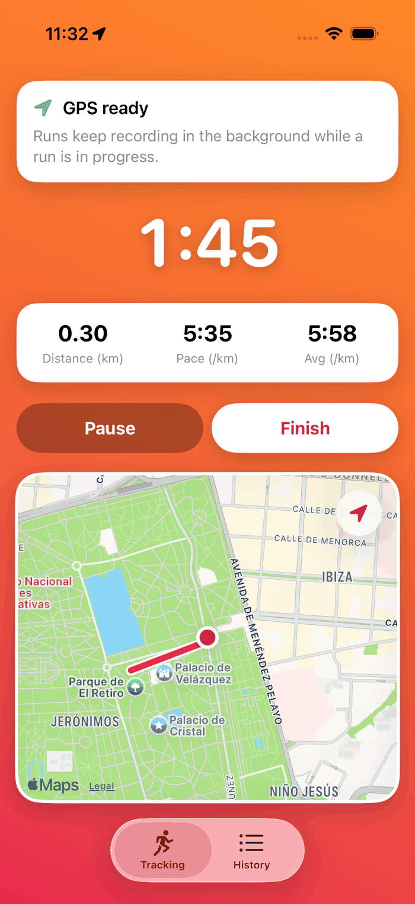
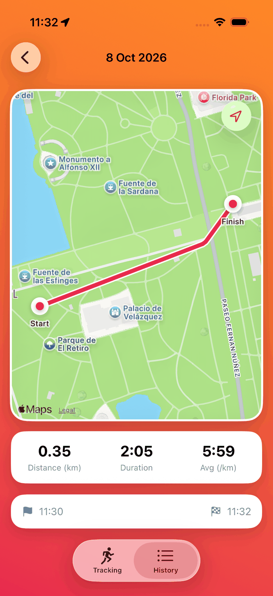
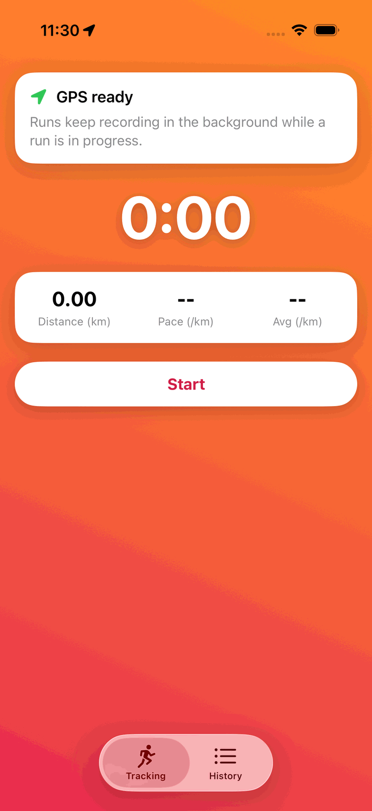
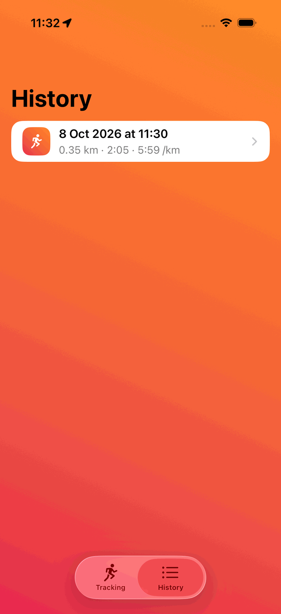

Live route, pace and distance
Watch your route grow on the map, with the elapsed time, your current pace and the average.
STRIDE records your runs with GPS: route, distance, time and pace, live on a map. No account, no ads, no tracking. Your runs stay on your iPhone.
For iPhone, iOS 18 or later. Available in English, Spanish, French, German, Italian and Portuguese.


What it does
Press start and go. STRIDE keeps the route, the distance and the pace while you think about running.
Watch your route grow on the map, with the elapsed time, your current pace and the average.
Lock your iPhone and put it in your pocket. Location is used only while a run is being recorded.
Stop at a traffic light and carry on. If the app closes, your run comes back where you left it.
Open any past run to see its route on the map, with the start and finish marked.
Kilometers or miles, a run goal, and light or dark mode, like the rest of your iPhone.
If you allow it, each finished run is written to Health. STRIDE never reads your Health data.
Screenshots


Corre. Registra. Que sea tuyo. STRIDE registra tus carreras con GPS: ruta, distancia, tiempo y ritmo, en vivo sobre un mapa. Sin cuenta, sin anuncios, sin seguimiento: tus carreras se quedan en tu iPhone. Política de privacidad · Soporte